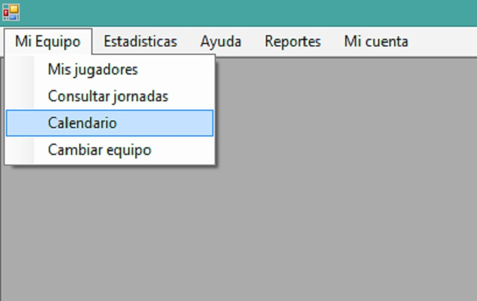

Al abrir la ventana principal del usuario (donde se muestran todas las ventanas), usted podrá observar la barra de menú en la parte superior de ésta:

Damos click en la pestaña "Mi equipo", a continuación click en la opción "Mis Jugadores":
A continuación Podremos ver los resultados del equipo elegido anteriormente

Los registros de los campos variarán dependiendo que equipo se elegió anteriormente en la ventana de "Selección de Equipos:"